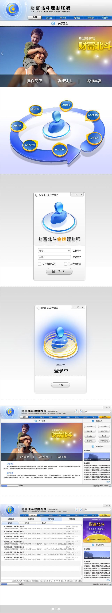

受国金证券邀请，委托设计一款为银行理财师量身定做的PC理财终端软件，打造一个为银行理财师提供全方位服务的交流平台。考虑到用户和行业的特殊性，我们对本产品进行全新的视觉和交互包装。信息丰富而复杂和层级多样性是本产品最大特点，也是难点，我们测试了多种交互的方案，大大降低了设计的不良率。简洁、高效、清爽为产品的核型设计理念，双方团队默契协作下，产品最终得以面世于众。
02.15.2011
受国金证券邀请，委托设计一款为银行理财师量身定做的PC理财终端软件，打造一个为银行理财师提供全方位服务的交流平台。考虑到用户和行业的特殊性，我们对本产品进行全新的视觉和交互包装。信息丰富而复杂和层级多样性是本产品最大特点，也是难点，我们测试了多种交互的方案，大大降低了设计的不良率。简洁、高效、清爽为产品的核型设计理念，双方团队默契协作下，产品最终得以面世于众。
